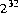
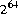
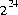
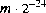
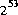
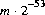
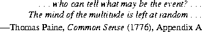

Contents | Prev | Next | Index
21.9 The Class java.util.Random
Each instance of class Random serves as a separate, independent pseudorandom
generator of primitive values.
public class Random {
protected long seed;
protected double nextNextGaussian;
protected boolean haveNextNextGaussian = false;
public Random();
public Random(long seed);
public void setSeed(long seed);
protected int next(int bits);
public int nextInt();
public long nextLong();
public float nextFloat();
public double nextDouble();
public double nextGaussian();
}
If two Random objects are created with the same seed and the same sequence of method calls is made for each, they will generate and return identical sequences of numbers in all Java implementations. In order to guarantee this property, particular algorithms are specified for the class Random. Java implementations must use all the algorithms shown here for the class Random, for the sake of absolute portability of Java code. However, subclasses of class Random are permitted use other algorithms, so long as they adhere to the general contracts for all the methods.
The algorithms implemented by class Random use three state variables, which are protected. They also use a protected utility method that on each invocation can supply up to up to 32 pseudorandomly generated bits.
21.9.1 protected long seed;
A variable used by method next (§21.9.7) to hold the state of the pseudorandom
number generator.
21.9.2 protected double nextNextGaussian;
A variable used by method nextGaussian (§21.9.12) to hold a precomputed
value to be delivered by that method the next time it is called.
21.9.3 protected boolean haveNextNextGaussian = false;
A variable used by method nextGaussian (§21.9.12) to keep track of whether it
has precomputed and stashed away the next value to be delivered by that method.
21.9.4 public Random()
This constructor initializes a newly created Random number generator by using the
current time of day (§20.18.6) as a seed.
public Random() { this(System.currentTimeMillis()); }
21.9.5 public Random(long seed)
This constructor initializes a newly created Random number generator by using the
argument seed as a seed.
public Random(long seed) { setSeed(seed); }
21.9.6 public void setSeed(long seed)
The general contract of setSeed is that it alters the state of this random number
generator object so as to be in exactly the same state as if it had just been created
with the argument seed as a seed.
The method setSeed is implemented by class Random as follows:
synchronized public void setSeed(long seed) {
this.seed = (seed ^ 0x5DEECE66DL) & ((1L << 48) - 1);
haveNextNextGaussian = false;
}
The implementation of setSeed by class Random happens to use only 48 bits of
the given seed. In general, however, an overriding method may use all 64 bits of
the long argument as a seed value.
[In certain early versions of Java, the setSeed method failed to reset the value of haveNextNextGaussian to false; this flaw could lead to failure to produce repeatable behavior.]
21.9.7 protected int next(int bits)
The general contract of next is that it returns an int value and if the argument
bits is between 1 and 32 (inclusive), then that many low-order bits of the returned
value will be (approximately) independently chosen bit values, each of which is
(approximately) equally likely to be 0 or 1.
The method next is implemented by class Random as follows:
synchronized protected int next(int bits) {
seed = (seed * 0x5DEECE66DL + 0xBL) & ((1L << 48) - 1);
return (int)(seed >>> (48 - bits));
}
This is a linear congruential pseudorandom number generator, as defined by D. H.
Lehmer and described by Donald E. Knuth in The Art of Computer Programming,
Volume 2: Seminumerical Algorithms, section 3.2.1.
21.9.8 public int nextInt()
The general contract of nextInt is that one int value is pseudorandomly generated
and returned. All possible int values are produced with (approximately)
equal probability.
The method setSeed is implemented by class Random as follows:
public int nextInt() { return next(32); }
21.9.9 public long nextLong()
The general contract of nextLong is that one long value is pseudorandomly generated
and returned. All possible long values are produced with (approximately)
equal probability.
The method setSeed is implemented by class Random as follows:
public long nextLong() {
return ((long)next(32) << 32) + next(32);
}
21.9.10 public float nextFloat()
The general contract of nextFloat is that one float value, chosen (approximately)
uniformly from the range 0.0f (inclusive) to 1.0f (exclusive), is pseudorandomly
generated and returned. All possible float values of the form
, where m is a positive integer less than  , are produced with (approximately)
equal probability.
, are produced with (approximately)
equal probability.
The method setSeed is implemented by class Random as follows:
public float nextFloat() {
return next(24) / ((float)(1 << 24));
}
The hedge "approximately" is used in the foregoing description only because the
next method is only approximately an unbiased source of independently chosen
bits. If it were a perfect source or randomly chosen bits, then the algorithm shown
would choose float values from the stated range with perfect uniformity.
[In early versions of Java, the result was incorrectly calculated as:
return next(30) / ((float)(1 << 30));
This might seem to be equivalent, if not better, but in fact it introduced a slight
nonuniformity because of the bias in the rounding of floating-point numbers: it
was slightly more likely that the low-order bit of the significand would be 0 than
that it would be 1.]
21.9.11 public double nextDouble()
The general contract of nextDouble is that one double value, chosen (approximately)
uniformly from the range 0.0d (inclusive) to 1.0d (exclusive), is pseudorandomly
generated and returned. All possible float values of the form
, where m is a positive integer less than  , are produced with (approximately)
equal probability.
, are produced with (approximately)
equal probability.
The method setSeed is implemented by class Random as follows:
public double nextDouble() {
return (((long)next(26) << 27) + next(27))
/ (double)(1L << 53);
}
The hedge "approximately" is used in the foregoing description only because the
next method is only approximately an unbiased source of independently chosen
bits. If it were a perfect source or randomly chosen bits, then the algorithm shown
would choose double values from the stated range with perfect uniformity.
[In early versions of Java, the result was incorrectly calculated as:
return (((long)next(27) << 27) + next(27))
/ (double)(1L << 54);
This might seem to be equivalent, if not better, but in fact it introduced a large
nonuniformity because of the bias in the rounding of floating-point numbers: it
was three times as likely that the low-order bit of the significand would be 0 than
that it would be 1! This nonuniformity probably doesn't matter much in practice,
but we strive for perfection.]
21.9.12 public double nextGaussian()
The general contract of nextGaussian is that one double value, chosen from
(approximately) the usual normal distribution with mean 0.0 and standard deviation
1.0, is pseudorandomly generated and returned.
The method setSeed is implemented by class Random as follows:
synchronized public double nextGaussian() {
if (haveNextNextGaussian) {
haveNextNextGaussian = false;
return nextNextGaussian;
} else {
double v1, v2, s;
do {
v1 = 2 * nextDouble() - 1; // between -1.0 and 1.0
v2 = 2 * nextDouble() - 1; // between -1.0 and 1.0
s = v1 * v1 + v2 * v2;
} while (s >= 1);
double norm = Math.sqrt(-2 * Math.log(s)/s);
nextNextGaussian = v2 * norm;
haveNextNextGaussian = true;
return v1 * norm;
}
}
This uses the polar method of G. E. P. Box, M. E. Muller, and G. Marsaglia, as
described by Donald E. Knuth in The Art of Computer Programming, Volume 2:
Seminumerical Algorithms, section 3.4.1, subsection C, algorithm P. Note that it
generates two independent values at the cost of only one call to Math.log and one
call to Math.sqrt.

Contents | Prev | Next | Index
Java Language Specification (HTML generated by Suzette Pelouch on February 24, 1998)
Copyright © 1996 Sun Microsystems, Inc.
All rights reserved
Please send any comments or corrections to doug.kramer@sun.com